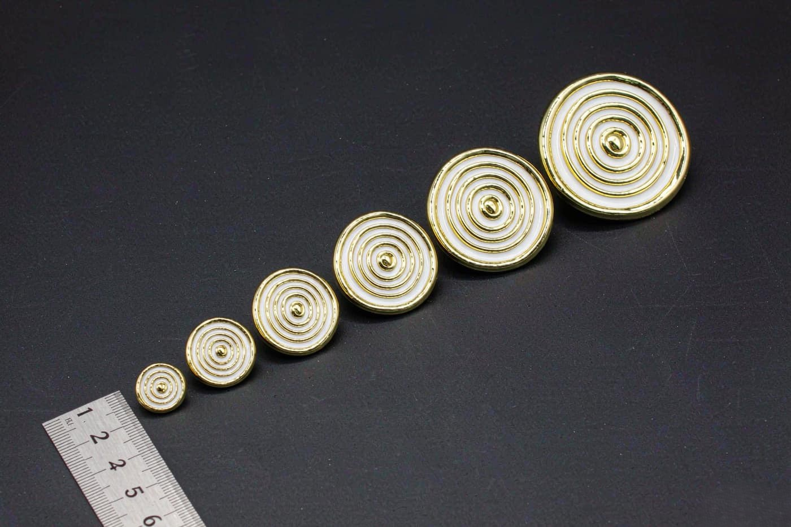

Size is the first thing buyers get wrong, and it is the mistake that is most expensive to fix, because size is encoded in the mould. A design that works at 35 mm and is shrunk to 20 mm does not simply get smaller. It loses everything fine in it.
This guide covers the sizes we produce most, what each one is actually good for, and how to decide before you order.

The size chart
| Diameter | Imperial | Typical use | What it can carry |
|---|---|---|---|
| 14 mm | 0.55 in | Sample pieces, small mascot pins | A single shape or initial. No lettering at any weight. |
| 18 mm | 0.71 in | Single-colour logo pins | A simple silhouette. Very short lettering at best. |
| 22 mm | 0.87 in | Standard small corporate pins | A clean logo mark. Short text on one line. |
| 25 mm | 0.98 in | The most requested size for good reasons | A logo with a short wordmark. Two lines of small text. |
| 30 mm | 1.18 in | Employee recognition and service pins | Full artwork with a name and a date. |
| 35 mm | 1.38 in | Club badges and organisation marks | Detailed multi-element artwork. |
| 40 mm | 1.57 in | Layered and commemorative designs | Artwork with real depth and detail. |
| 50 mm | 1.97 in | Large display pieces and event pins | Anything. This is where fine line work survives. |
| 60 mm and above | 2.36 in and up | Collector series and statement pieces | Full illustrations with fine engraving. |
Why 25 mm is the most ordered size
It is a balance point rather than a favourite. At 25 mm a pin is large enough to read the design and hold lettering, and small enough that a wearer does not think twice about putting it on. It is also a size that suits a lapel, a cap and a lanyard without looking out of place.
For a first order we usually suggest 25 mm as the safe default, unless the artwork tells us otherwise. If the design is a character illustration, go bigger. If it is a wordmark, 22 to 25 mm is enough and larger will only make the pin heavy for no visual gain.
Why small pins are harder than they look
Detail does not scale down gracefully. A 0.5 mm line on a 25 mm pin is 0.25 mm on a 12.5 mm pin, which is thinner than the enamel fill can reliably hold and thinner than the plating will sit on cleanly.
There are three practical limits that come out of the workshop.
- Text below about 4 mm cap height becomes unreadable. The letter shapes fill in, and what was legible at 25 mm turns into a grey line at 15 mm.
- Hairline gaps between colour areas disappear. If two colours meet with only a thin metal line between them, that line vanishes below roughly 18 mm.
- Enamel cavities that are too shallow cannot hold colour evenly. At small sizes we often deepen the cavities, which slightly changes the artwork, so we flag it on the proof rather than letting it fail in production.
None of this makes small pins a bad idea. It makes them a specification decision rather than a default, and it is exactly why the CAD proof matters at small sizes.
Size, weight and how the pin feels
Weight is a function of size, base metal and thickness, and it is the factor people notice without realising it. A pin that feels heavy gets taken off. A pin that feels light gets taken off.
Our base metal options span 0.3 mm brass, 0.3 mm iron, 0.4 mm stainless steel for enamel work, and solid brass, bronze or iron at 1.0 to 1.5 mm for die struck pieces. A larger die struck pin in solid brass is genuinely heavy, which is appropriate for a service award and inappropriate for a giveaway.
If a pin is meant to be worn daily, say so when you order. We will specify the metal and thickness accordingly rather than defaulting to the heavier option.
How to choose your size
A practical sequence that works.
- Find the smallest element that must be legible, whether that is the smallest letter or the thinnest line in the logo.
- Work backwards from it. If the smallest text is 5 mm tall in the artwork, the finished pin needs to be roughly 25 mm for that text to survive.
- Decide where it will be worn. A lapel supports more weight than a cap brim, and a display piece can be larger than a wearable one.
- Check the count. Larger pins cost more material and more freight weight, so the quantity affects the economics more than the specification does.
- Ask for the proof at your chosen size. We will tell you honestly if the artwork will not hold at that diameter, and what to change.
Ordering several sizes of one design
A common programme is one artwork at two or three sizes, for a giveaway tier and a recognition tier. This is efficient for us because the same artwork at different diameters shares the same plate and the same plating reference, and it is efficient for you because you consolidate the freight.
Note that each size still needs its own mould, because size is encoded in the cavity layout. So multiple sizes mean multiple tooling lines on the quotation, but they can be produced in one scheduled run and shipped together.
The same logic applies to coins
Challenge coins have their own size logic, with thickness mattering more than diameter because coins are held in the hand and struck heavier. We have written a separate guide on challenge coin diameters and thickness that covers that comparison in detail.